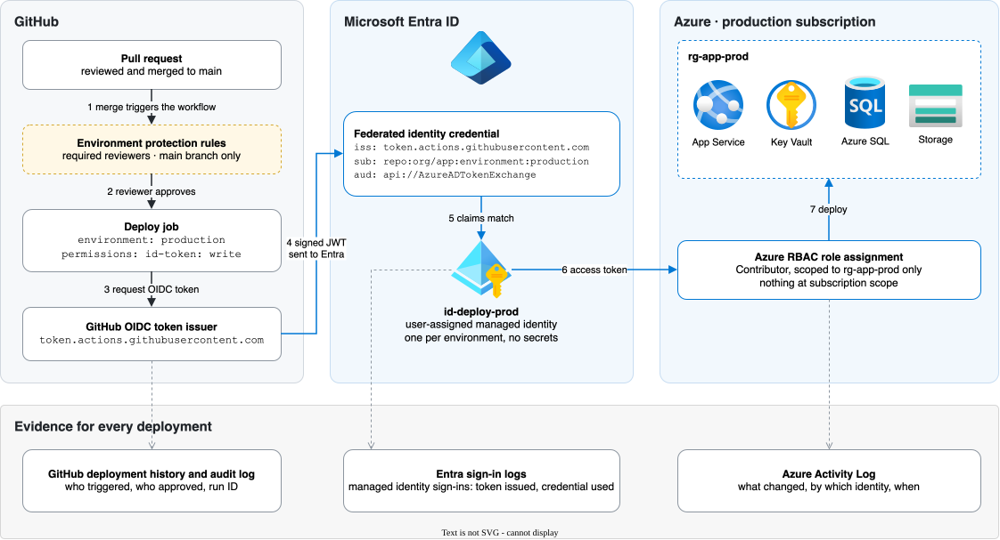

GitHub issues a short-lived token, Entra ID swaps it for an Azure token, and RBAC limits what that token can change.

Editable source: assets/diagrams/workload-identity-architecture.drawio
Most Azure pipelines I review still sign in with a client secret. Someone created a service principal a few years ago, pasted the secret into GitHub, and set a reminder to rotate it that nobody remembers. That secret works from any machine, for anyone who can read it, until the day it expires.
GitHub Actions doesn't need it. Every workflow run can ask GitHub for a short-lived OpenID Connect (OIDC) token that says exactly which repository and environment it came from. You tell Microsoft Entra ID to trust that token for one specific identity, and that's it. There's no password, so there's nothing to leak and nothing to rotate.
Here's the setup I use for production: one identity per environment, an approval gate in front of production, and enough logging to answer "who deployed this?" a month later.
How the trust works
Follow the numbers in the diagram:
- A pull request is merged to
main, which starts the deploy workflow. - The job targets the
productionGitHub environment, so it waits for a required reviewer. - Once approved, the job asks GitHub for an OIDC token. It can only do that because the workflow grants
id-token: write. - GitHub signs the token, and the
azure/loginaction sends it to Entra ID. - Entra compares the token's issuer, subject and audience with the federated identity credential on the managed identity. All three have to match exactly.
- If they match, Entra returns a normal Azure access token for that identity.
- Azure RBAC decides what the identity can touch. Here, that's one resource group.
Step 5 is where most setups break. The subject claim isn't always the branch. When a job declares an environment, GitHub puts the environment in the subject instead:
repo:my-org/my-app:environment:production # job has environment: production
repo:my-org/my-app:ref:refs/heads/main # no environment, run from mainIf your federated credential expects ref:refs/heads/main but the job uses environment: production, the login fails. Pick one model and use it everywhere. I use environments, because the approval rules live there too.
One newer detail to watch: for repositories created, renamed or transferred on or after July 15, 2026, GitHub adds numeric IDs to the subject, for example repo:my-org@123456/my-app@456789:environment:production. Older repositories keep the old format unless they opt in. If a brand-new repo fails to sign in while an older one works fine, look at the token's actual subject first.
Managed identity or app registration?
Both work. Microsoft documents federated credentials on either a Microsoft Entra app registration or a user-assigned managed identity. I default to the managed identity:
- You can't add a client secret to it, so nobody can quietly fall back to the old way.
- It's an ordinary Azure resource. It sits in a resource group, carries tags, and gets created by the same Terraform that builds the platform.
- Platform teams often have rights to create Azure resources but not app registrations, so a new pipeline doesn't need a ticket to the identity team.
The identity has to exist before the pipeline that uses it, so create it in your platform or bootstrap Terraform, not in the application's own stack. I reach for an app registration only when one identity has to work across tenants, which a managed identity can't do.
One identity per environment
Each environment gets its own managed identity, its own federated credential and its own resource group scope:
| GitHub environment | Protection | Identity | Role and scope |
|---|---|---|---|
dev | None | id-deploy-dev | Contributor on rg-app-dev |
test | None | id-deploy-test | Contributor on rg-app-test |
production | Required reviewers, main only | id-deploy-prod | Contributor on rg-app-prod |
A token minted for dev can't be exchanged for the production identity, because its subject won't match the production credential. The isolation comes from Entra, not from someone getting a pipeline variable right.
Contributor on a single resource group is a sensible default for most application deployments. Don't hand out Contributor or Owner at subscription scope. If the pipeline also creates role assignments, which is common when Terraform wires up identities for the app, it needs more than Contributor. Give it that right only on the scope where it's needed, and use the Role Based Access Control Administrator role with a condition that limits which roles it can assign.
The workflow
name: deploy
on:
push:
branches: [main]
permissions:
id-token: write
contents: read
jobs:
deploy:
runs-on: ubuntu-latest
environment: production
steps:
- uses: actions/checkout@v4
- uses: azure/login@v2
with:
client-id: ${{ secrets.AZURE_CLIENT_ID }}
tenant-id: ${{ secrets.AZURE_TENANT_ID }}
subscription-id: ${{ secrets.AZURE_SUBSCRIPTION_ID }}
- run: |
terraform init
terraform apply -auto-approveThe client ID, tenant ID and subscription ID aren't credentials. I still store them as environment secrets rather than repository secrets, so each GitHub environment points at its own identity. There's a bonus: when an environment requires approval, the job can't read its environment secrets until a reviewer approves.
Try to break it
Before you trust the setup, check that it actually says no:
- Run the production job from a feature branch. If the environment is limited to
main, GitHub won't start the job. - Point a
devjob at the production client ID. Entra should reject the login because no federated credential matches the subject. - Remove
id-token: writefrom the workflow. The login step should fail because it can't get a token.
If any of these succeed, fix that before migrating more pipelines.
Answering "who deployed this?"
Three logs tell the whole story:
- GitHub deployment history and audit log: who merged, who approved, and the run ID.
- Entra sign-in logs, under managed identity sign-ins: when a token was issued and for which identity.
- Azure Activity Log: what changed, with the managed identity as the caller.
Time and identity tie them together. If you also name deployments after the run, for example gh-${{ github.run_id }}, you can go from a resource change straight back to the pull request.
Where to start
- Find every GitHub secret that holds an Azure client secret, usually named something like
AZURE_CREDENTIALS. - Create one managed identity per environment in your platform Terraform, each with its own federated credential.
- Move one low-risk pipeline, confirm it works, then delete the old secret and the old service principal credential.
- Repeat for the rest, with production last.
Once the last secret is deleted, there's nothing left to rotate.
Sources
- Use the Azure Login action with OpenID Connect (Microsoft Learn)
- Configure a user-assigned managed identity to trust an external identity provider (Microsoft Learn)
- Configure an app to trust an external identity provider (Microsoft Learn)
- Enable workload identity federation for GitHub Actions: note on the July 2026 subject format (Microsoft Learn)
- Best practices for Azure RBAC (Microsoft Learn)
- Delegate Azure role assignment management with conditions (Microsoft Learn)